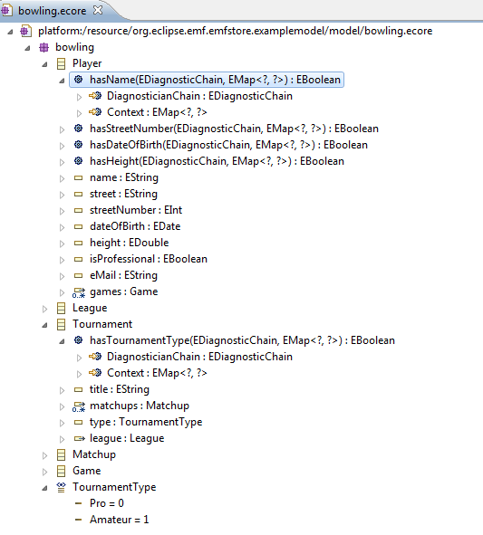
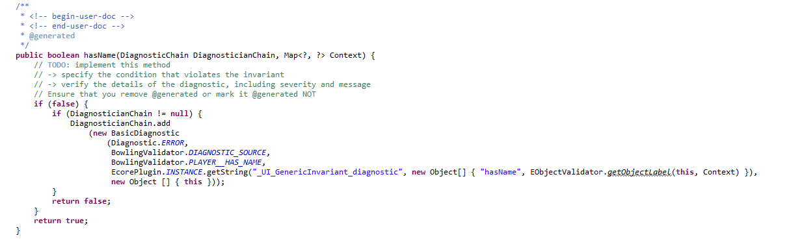
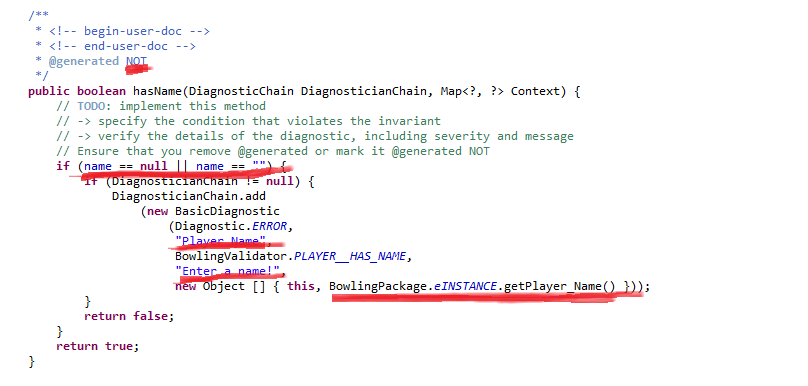
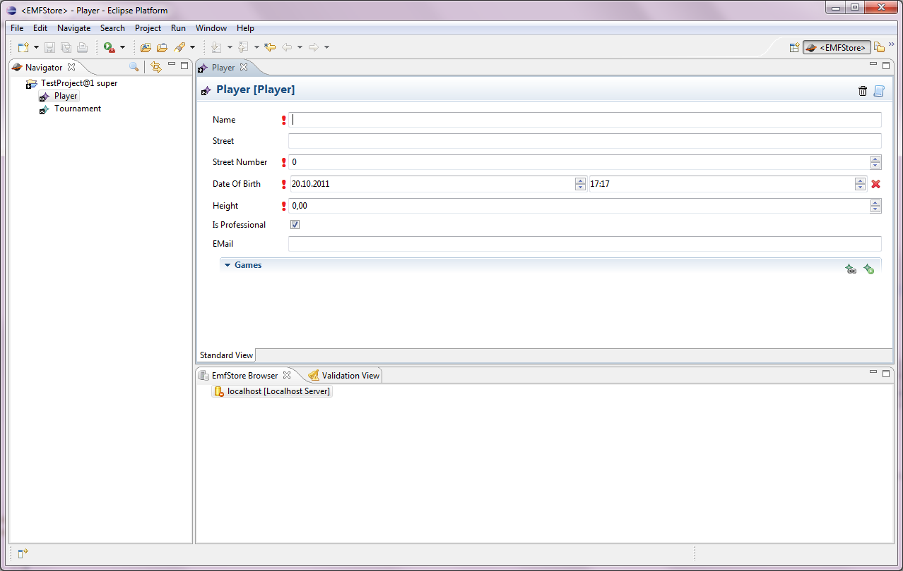
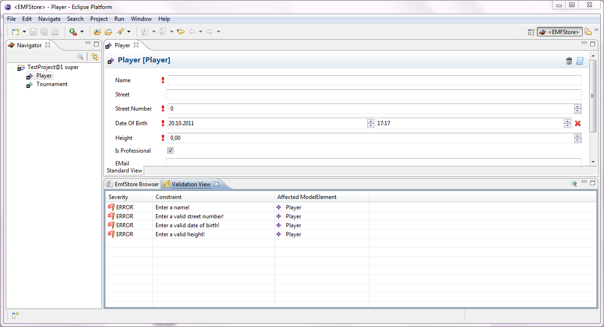

EMF Built in Validation
With the built in validation in emf it is possible to model the constraints of your model in the ecore file. While generating model code, validation code is also generated. The only aspects you have to adapt in the code are determining the condition when the validation shall fail, update attribute string, defining a meaningful message which explains the reason for the failing and insert the graphical object in the returning object so that also the live validation can be triggered on this attribute.
Step by Step description:
In the following step by step description the bowling model is used as an example.
1. Validation constraints are modelled by EOperations. In order that the validation code is generated automatically the signature of the EOperation is important. For instance, if we want each player (in the bowling model) to have a name we define following EOperation:
- meaningful name
-return value of type EBoolean
-2 parameters of type EDiagnosticChain and EMap<?,?>

2. Reload ecore model in the genmodel and generate model code. Following method will be generated in class PlayerImpl:

3. To make this method work we have to adapt the aspects which are mentioned above:
1. Determine condition when validation fails
2. Update path of validation attribute
3. Update meaningful error message
4. Insert graphical object in return object

4. This is how the live validation looks like:

5. To trigger validation manually you have to right-click on one element of the project and click “validate”. The validation results are shown in the “Validation View”:
